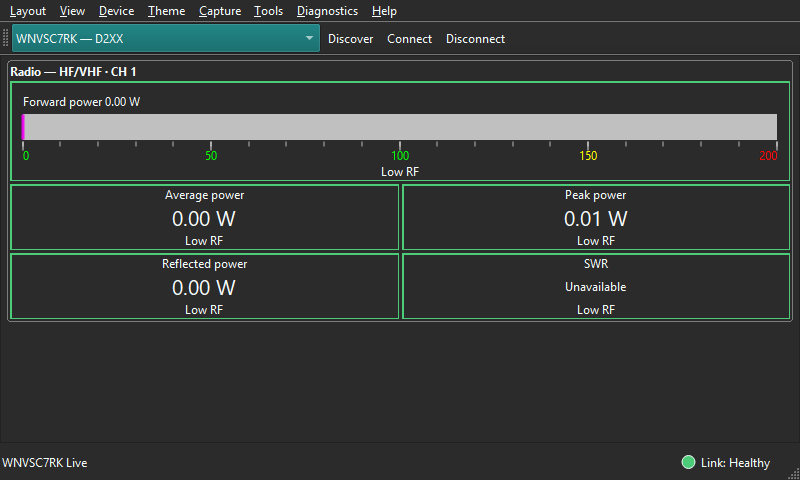

RayWn2App on Windows
Start with the installation package supplied with your WN-2 or downloaded from RF StateSide. Keep the instructions supplied with that package: its exact filename and setup prompts may differ between releases.
Install and open
- Download the Windows installation package supplied by RF StateSide, or use the package supplied with your WN-2. Close RayWn2App before installing an update.
- Run the installer and follow its prompts, then leave Launch RayWn2App selected on the completion page if you want to open it immediately. The WN-2 USB driver is installed separately. Allow administrator access only for the installer you intended to run.
- Open RayWn2App from the Start menu or its desktop shortcut. Connect the powered WN-2 with a USB data cable.
The default installation folder is C:\Program Files\RayWn2App. Its Layouts folder contains Single Radio and Radio and Amplifier templates. Use Layout → Station Layouts to choose one and assign your WN-2. Save customized layouts in Documents or another personal folder.
Find your WN-2
Press Discover. Select the entry with your WN-2's serial number, then Connect. Windows can offer a D2XX entry and a VCP entry with a COM port. These are two ways to reach the same meter, not two meters. Connect through one at a time. This illustration uses D2XX.
Close or disconnect other programs that use the WN-2 before connecting. If Windows changes the COM number after moving the USB cable, discover again and select the matching serial number.
If the meter does not appear
Windows needs the WaveNode USB driver before RayWn2App can discover a physical WN-2. Download it from WaveNode Downloads. Choose the USB driver for Windows 10 and 11 and follow the installation instructions linked on that page. RayWn2App's installer includes its application runtimes but does not install this hardware driver.
If Device Manager shows USB<-->WN-2 under Other devices with drivers not installed, install the WaveNode driver, reconnect the cable and press Discover again. For a downloaded driver folder, use Device Manager's Update driver → Browse my computer for drivers and include subfolders. Check power and the USB data cable too. The standard and Universal x64 FTDI Windows packages version 2.12.36.20 do not list the WN-2 identifier (0403:B028). Use the WaveNode package for this meter rather than assuming a generic FTDI download will work. Do not change the meter's identity or calibration. If it still does not appear, contact RF StateSide with the Windows version and the message shown in Device Manager.
D2XX works, but no VCP COM port appears
Windows may require a second driver step for the serial port:
- Open Device Manager. If USB Serial appears with its driver missing, right-click it and choose Update driver.
- Choose Browse my computer for drivers, select the same extracted WaveNode driver folder, and enable Include subfolders.
- Complete installation. Check Ports (COM & LPT) for the new COM port, then press Discover in RayWn2App.
- Select the matching VCP (COM…) entry and connect. Disconnect D2XX first; use only one transport for a meter at a time.
This second step was verified on Windows 10. A Windows 11 virtual-machine test also confirmed both D2XX and VCP working after installing the WaveNode driver. Before that installation, Windows could not find a compatible driver in the generic FTDI folder, even with Include subfolders selected. Use the WaveNode Windows driver for the WN-2. COM numbers vary between computers. If Windows cannot find a compatible driver, contact RF StateSide with the exact message rather than forcing an unrelated driver.

RayWn2App on Windows, receiving live measurements from physical WN-2 WNVSC7RK with RF off. Select image to enlarge.

Check your first readings
The status bar should show your meter Live and its link healthy. The untouched initial Untitled layout automatically assigns all its instruments to the first connected device that sends live measurements. Its bindings are retained for the next session. Saved or edited layouts keep their own assignments. You can also load a supplied station layout and select the WN-2 for it. With the transmitter in receive, near-zero power, Low RF and unavailable SWR are normal. They do not mean that the USB connection failed.
RF couplers are factory calibrated and do not require additional calibration. Optional user reference matching is available if you want readings to match another meter. See First station connection, Device Settings and Connection problems.